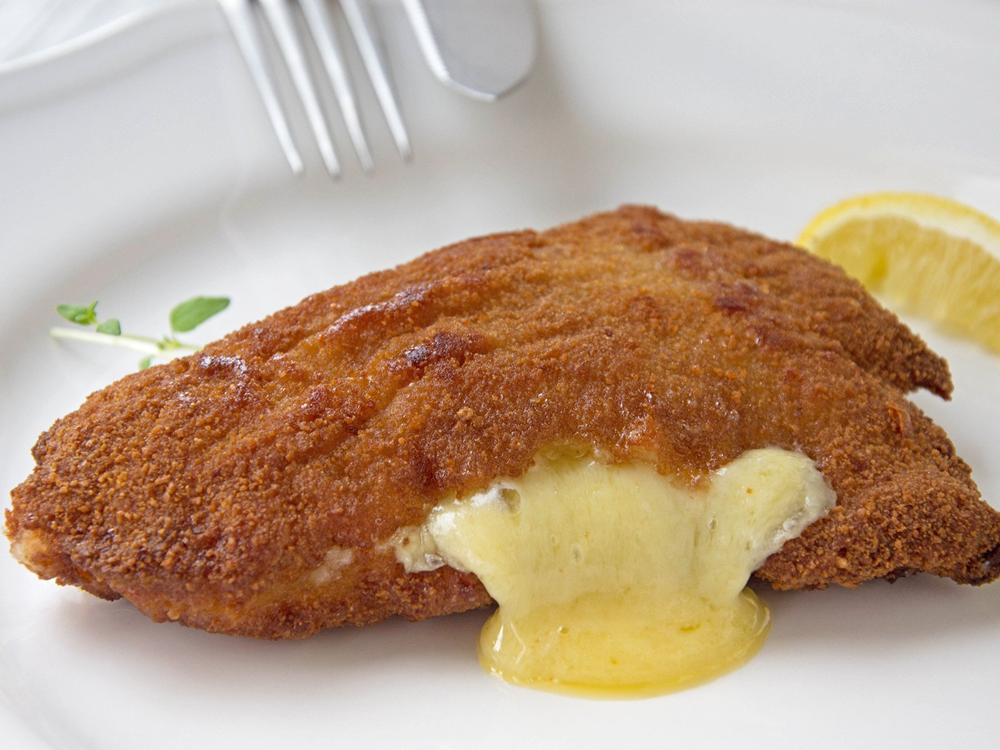

Cordon bleu

Description
Cordon Bleu is a schnitzel that is filled with cheese and ham, breaded with crumbs and deep-fried until it is crisp. The characteristic of this dish is a crunchy outside, and inside tender flesh which oozes melted cheese.
Classic cordon bleu is made with veal or pork, however, in recent times it has become popular to use turkey or chicken instead.
Ingredients
- 4 pork loin about 200 g each
- 5 tbsp flour
- 150 g bread crumbs
- 80 g clarified butter
- 100 g cooked ham
- 100 g cheese Emmental in slices
Steps
- Line up three deep bowls. Place the flour in the first one. In the second bowl break the eggs, whisk them with the cream (optional) and season with salt and pepper. In the third bowl add the bread crumbs.
- Season the meat with salt and pepper.
- Fold the schnitzel in half and fill with ham and cheese.
- Now you hammer with the meat mallet (affiliate link) around the edges of the schnitzel pocket.
- Coat the schnitzel pocket with flour, ensure that both sides are covered. Next coat the schnitzel in the egg and in bread crumbs
- Fry each schnitzel for about 4-6 minutes on each side until they have a golden brown colour. Serve immediately.